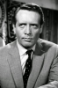

Country:United States, 103 minutes
Spoken languages:
Genres:Sci-Fi, Horror
Director(s):David Cronenberg
Writer(s):David Cronenberg
Video Codec:Unknown
Number: 2188


Certification:R
Storyline:
After a man with extraordinary—and frighteningly destructive—telepathic abilities is nabbed by agents from a mysterious rogue corporation, he discovers he is far from the only possessor of such strange powers, and that some of the other “scanners” have their minds set on world domination, while others are trying to stop them.
Cast: 

Medium: Bluray + DVD,
Comments: 2x DVD, 1x Bluray
Loaned: No
Aspect ratio: Unknown